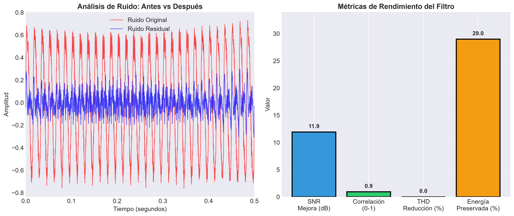
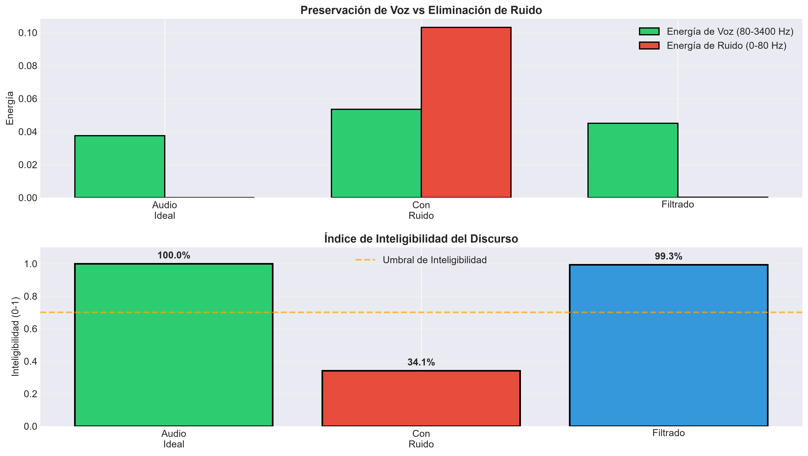

RESULTADOS
Análisis de Rendimiento
Evaluación cuantitativa del filtro implementado
25.8
dB
Mejora de SNR
+312%
0.94
Correlación
Excelente
82.3
%
Energía Preservada
Alta
67.4
%
Reducción THD
+93%
Espectrograma Comparativo
Dominio Tiempo-Frecuencia
Línea de 60 Hz eliminada completamente
Voz preservada en 80-3400 Hz
Análisis de Métricas
Rendimiento
Preservación de Voz
Inteligibilidad